Bonus: your choices depend on your highest level, Lv 100–110. Switch effects, wings, halos and tails in the Rebirth window, opened from the equipment window.
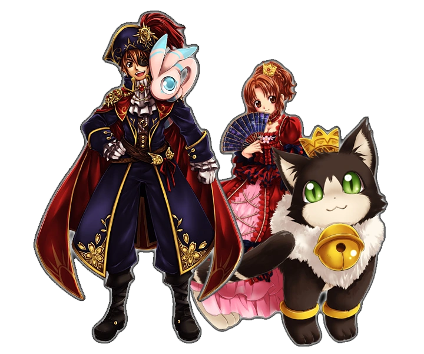
High Emil
Bonus options
A new effect
A Catty, Medamas or Cait Sith pet or marionette
In game
Backpack 1–3: Catty Medama Keeper, Assault, General
Marionette 1–3: Cat Doll in purple, blue, orange
Partner 1: Black Cat
Partner 2: Cait Sith, also as a ride
Not shown: Grace, Aureola, Ankle Feather (particle effects)
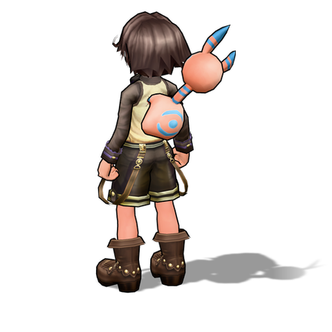
Backpack 1
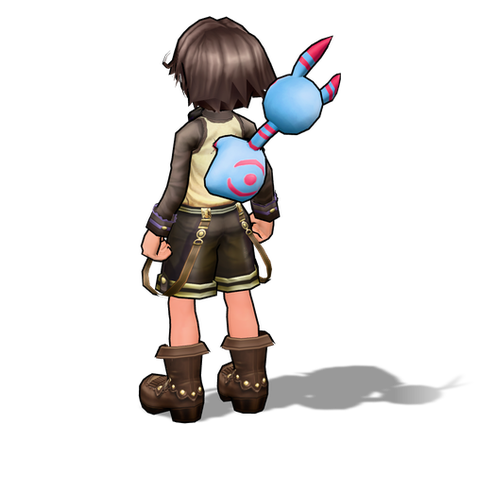
Backpack 2
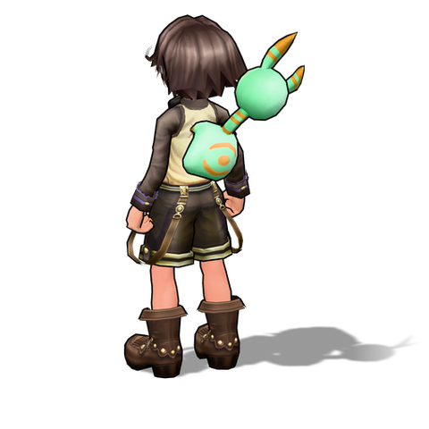
Backpack 3
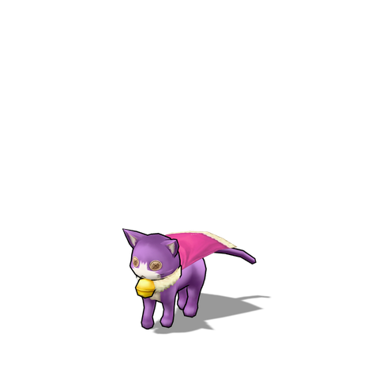
Marionette 1
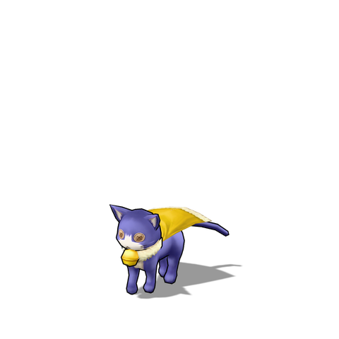
Marionette 2
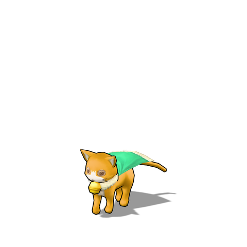
Marionette 3
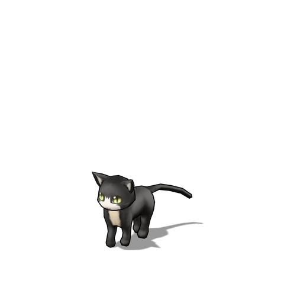
Partner 1
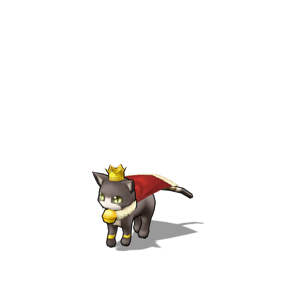
Partner 2Partner 2 (riding)
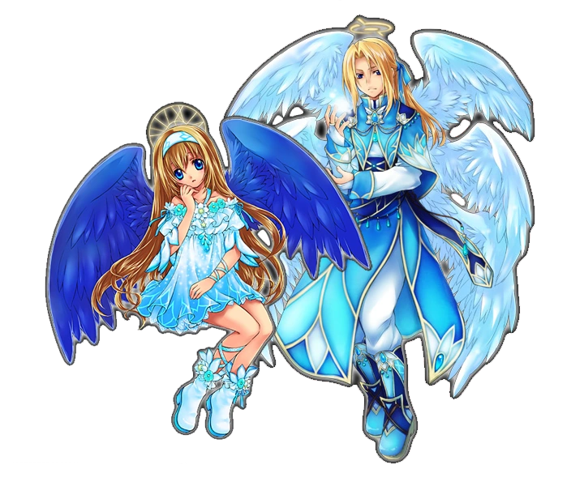
High Titania
Bonus options
Different wings
Extra wings
A new wing color
A different halo
In game
Halos: Powers (Lv 105), Seraphim (Lv 106)
Wing shapes: Default · 2 Feathers (Lv 100) · 3 Feathers (Lv 101) · Ex Feather (Lv 108) · Ex 2 Feathers (Lv 109) · Ex 3 Feathers (Lv 110)
Wing colors: Lv 102 red, purple, blue · Lv 103 light blue, green, yellow green · Lv 104 yellow, orange, black · Lv 107 grey, white
Any color works on any shape.
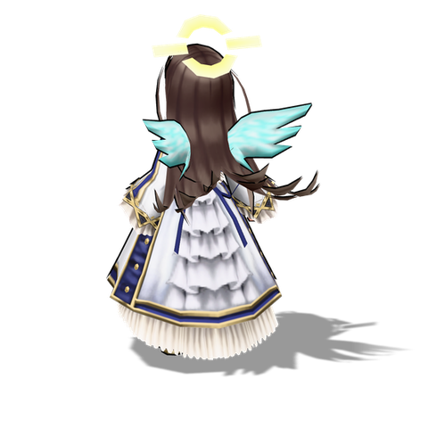
Halo (Powers)
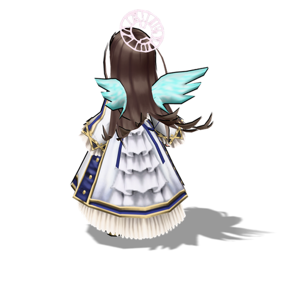
Halo (Seraphim)
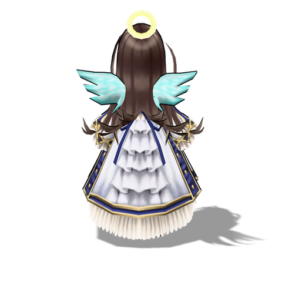
Default wings
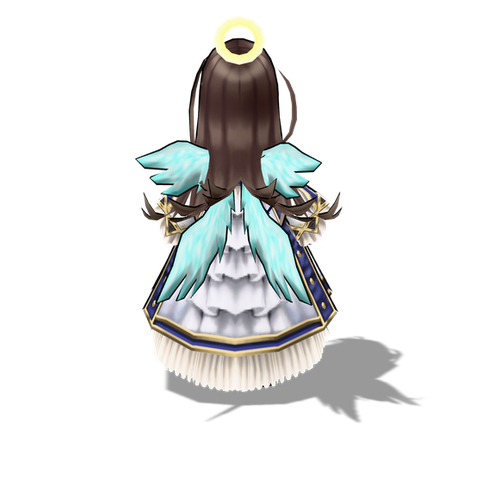
2 Feathers (Lv 100)
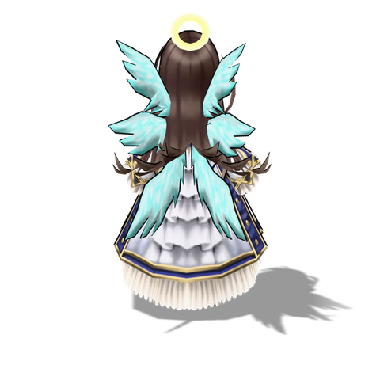
3 Feathers (Lv 101)
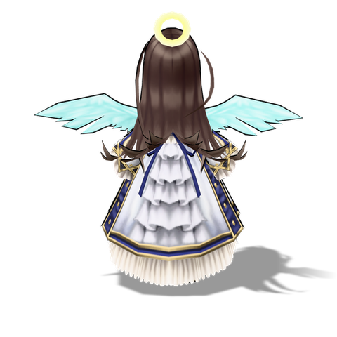
Ex Feather (Lv 108)
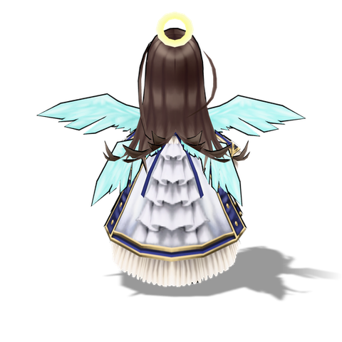
Ex 2 Feathers (Lv 109)
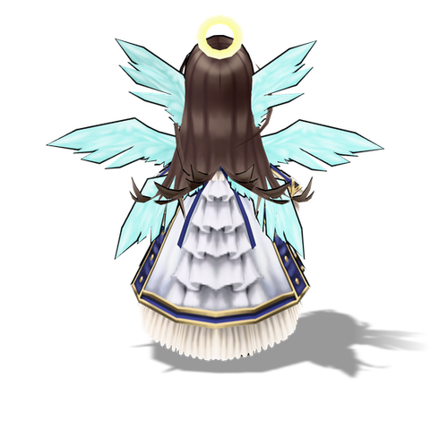
Ex 3 Feathers (Lv 110)
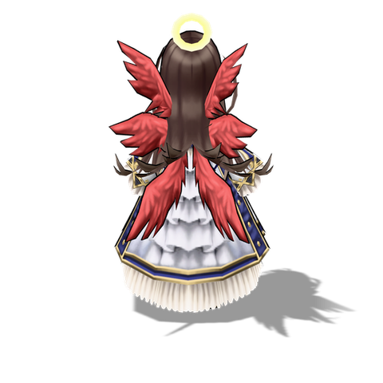
Red · 3 Feathers
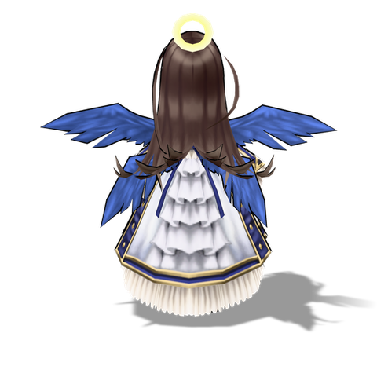
Blue · Ex 2 Feathers
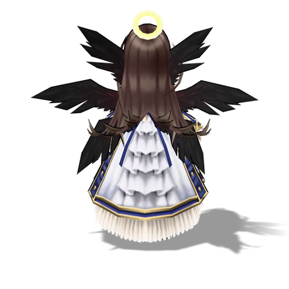
Black · Ex 3 Feathers
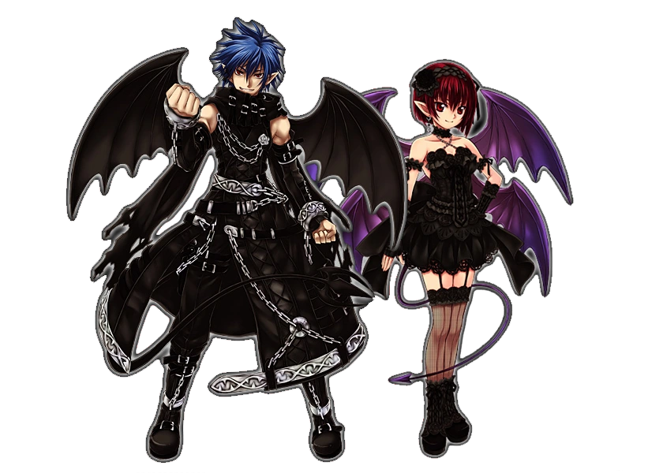
High Dominion
Bonus options
Different wings
Extra wings
A new wing color
A different tail
In game
Tails: trident (Lv 105), slim (Lv 106)
Wing shapes: Default · 2 Feathers (Lv 100) · 3 Feathers (Lv 101) · Ex Feather (Lv 108) · Ex 2 Feathers (Lv 109) · Ex 3 Feathers (Lv 110)
Wing colors: Lv 102 red, purple, blue · Lv 103 light blue, green, yellow green · Lv 104 yellow, orange, black · Lv 107 grey, white